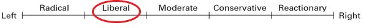
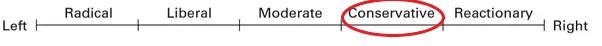
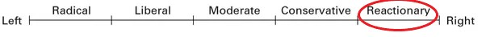
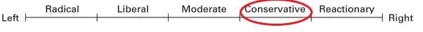
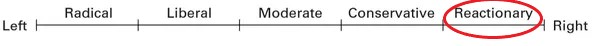
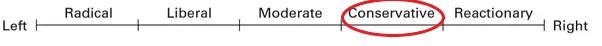
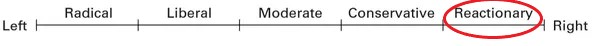

Supports social equality and egalitarianism, often in opposition to social hierarchy and social inequality. It typically involves a concern for those in society whom its adherents perceive as disadvantaged relative to others (prioritarianism)
as well as a belief that there are unjustified inequalities that need to be reduced or abolished (by advocating for social justice).The term left-wing can also refer to "the radical, reforming, or socialist section of a political party or system"
Right-Wing Politics
Right-wing politics hold that certain social orders and hierarchies are inevitable, natural, normal or desirable, typically supporting this position on the basis of natural law, economics or tradition. Hierarchy and inequality may be viewed as natural results of traditional
social differences or the competition in market economies. The term right-wing can generally refer to "the conservative or reactionary section of a political party or system".
Enter a URL using the button below to check where the website is on the scale above



Known Fake News Sites
America’s Last Line of Defense
Daily Feed News
Morning Herald
Consinfo
365 Us News
The Trumppers
Newslo
Politicops
U.S. Political News
Freedom Crossroads
Conservative Nation
USA Politics Today
Clear Politics
London Web News
The Postillon
Teddy Stick
Daily Feed News
The Federalist Tribune
Empire News
USA Television
The Rightists
American News
Washington Feed
Maine Republic Email Alert
Viral Cords
News Feed Hunter
Breaking Top
enVolve
Guerrilla News
Daily Insider News
The Political Tribune
Thepoliticaltribune.com
USA Daily Post
American Journal Review
Blue Vision Post
The Examiner
Patriot Hangout
Your News Wire
St. George Gazette
Power Daily
All data regarding political leanings was collected from Allsides.com and is used in a noncomercial and educational fashion for the purpose of learning HTML.
All data regarding fake news websites was collected from FactCheck.com and used strictly for the purpose of education.
 


